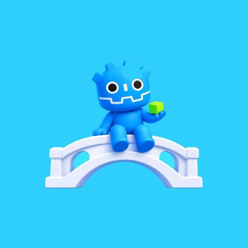
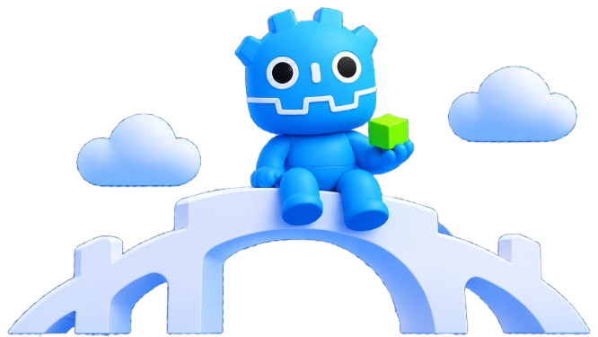

01 / SCENES
⌄ Main◈ World◇ Player◉ Camera3D☼ DirectionalLight
Анализ сцен
Чтение `project.godot` и `.tscn`, разбор иерархии узлов и преобразование поддерживаемых объектов.

GodotBridge СкачатьGodotBridge анализирует твой Godot-проект, переносит совместимые элементы и подготавливает файлы для Roblox Studio.

Конвертер, исходники Roblox Experience, тестовый Godot-проект и документация.
Начни с базовой конвертации сцен и ресурсов. GodotBridge также показывает, какие элементы требуют ручной адаптации.
Чтение `project.godot` и `.tscn`, разбор иерархии узлов и преобразование поддерживаемых объектов.
Модели, текстуры и аудио копируются в отдельные папки для последующего импорта.
Ограниченный перевод конструкций GDScript с предупреждениями о неподдерживаемых функциях.
Показывает, что действительно обработано, а что ещё нужно адаптировать в Roblox Studio.
Скачай GodotBridge и распакуй ZIP в удобную папку.
Установи Python 3.10+ и запусти `converter/run_converter.bat`.
Проверь отчёт и импортируй `.rbxmx` в Roblox Studio.
Отдельный Windows `.exe` пока не включён. Для его сборки используй `converter/build_windows.bat` на Windows.
Подготовь среду один раз — и начинай проверять свои Godot-проекты.
